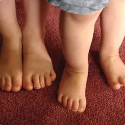
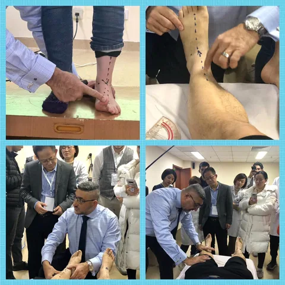
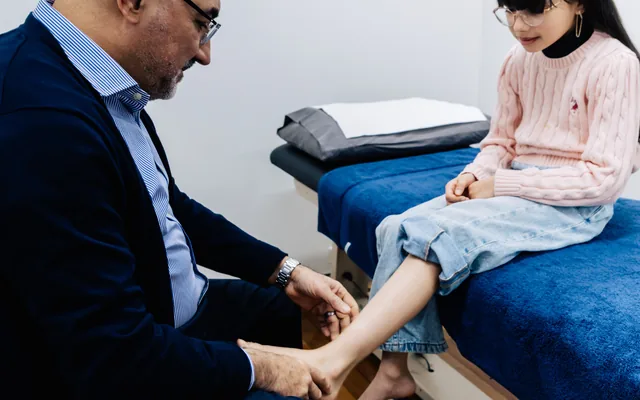
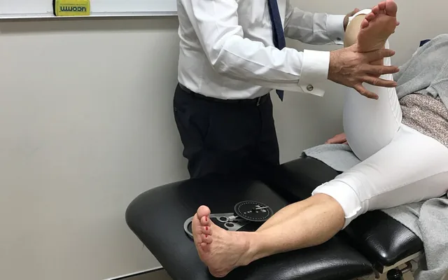
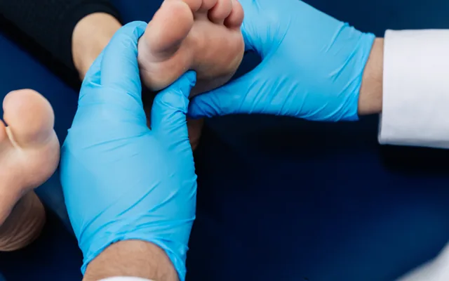
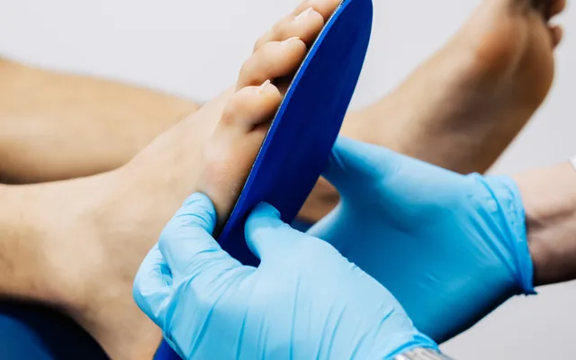

01
Assess
We assess how your child stands, walks and runs against what is expected for their age.
Out-toeing in children, where the feet point outwards when walking. Assessed the same way as in-toeing.
Trusted by patients from Sydney to Narrabri
If this sounds like your pain, there is a structural reason for it. The assessment is what finds it.
Like in-toeing, out-toeing can originate at the foot, the shin or the hip. Some is expected at particular ages and resolves with growth. What matters is whether it is within the expected range for your child and whether it is causing symptoms.

Out Toe is diagnosed with the Najjarine Biomechanical Assessment, so treatment is prescribed against a finding rather than a symptom.
We assess how your child stands, walks and runs against what is expected for their age.
We identify which level the rotation is coming from and explain what we found.
Where nothing needs doing we say so and set a review. Where it does, treatment is staged around growth.

Which of these you need is decided at the assessment. Most plans combine more than one.

Pigeon toe, flat feet and growing pains, assessed while the foot is still developing.
Read more
A full lower limb assessment from the feet up. It is the foundation of every treatment plan we prescribe.
Read more
Hands-on work addressing restrictions across the foot’s 26 bones.
Read more
Prescribed devices that change how your foot meets the ground. Manufactured on site at our Kirrawee head office.
Read moreReassuring and thorough. We knew where we stood by the end of the appointment.
Took the time to show us what they were seeing as our son walked.
Honest about what did and did not need doing.
Neither is automatically worse. Both are assessed the same way, and both are often within the expected range for the age.
It can affect comfort and efficiency. Whether it is worth addressing is what the assessment establishes.
There is no fixed age. If you have noticed it or your child is complaining, that is the time.
Some rotational patterns do. Your podiatrist will ask about family history as part of the assessment.
No. You can book directly. If you are on a Medicare care plan your GP will refer you, and we can bill that.
Treating lower limb pain since 1990
Choose your clinic and book straight into its diary, or call and we will point you to the right practitioner.